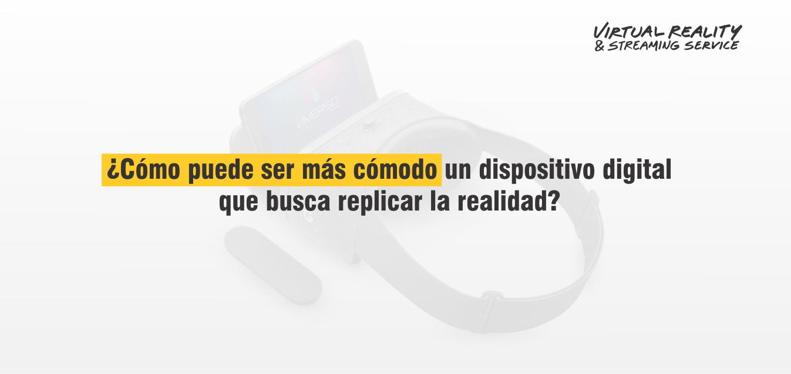
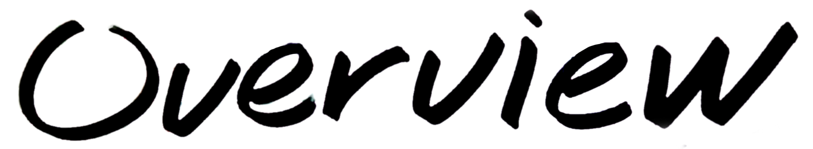
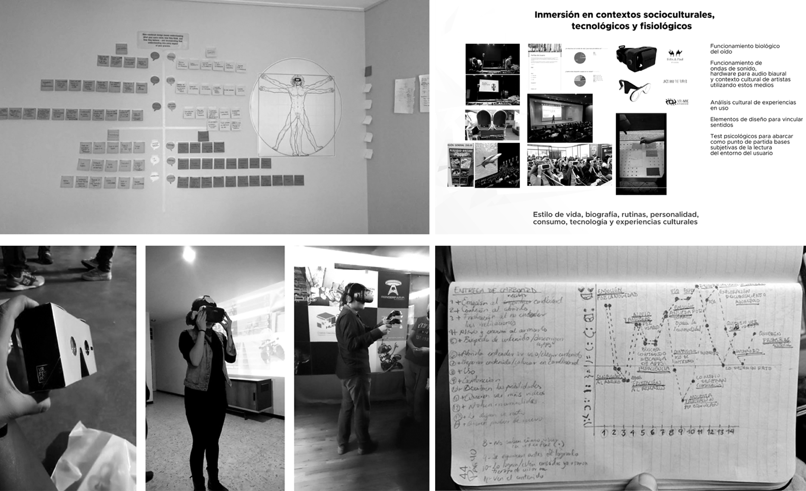
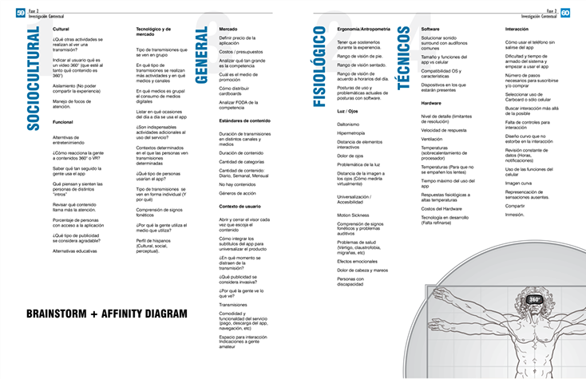
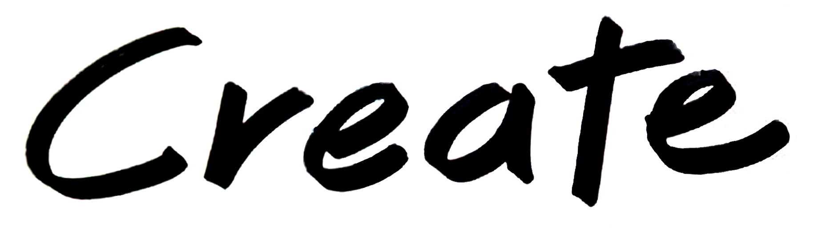
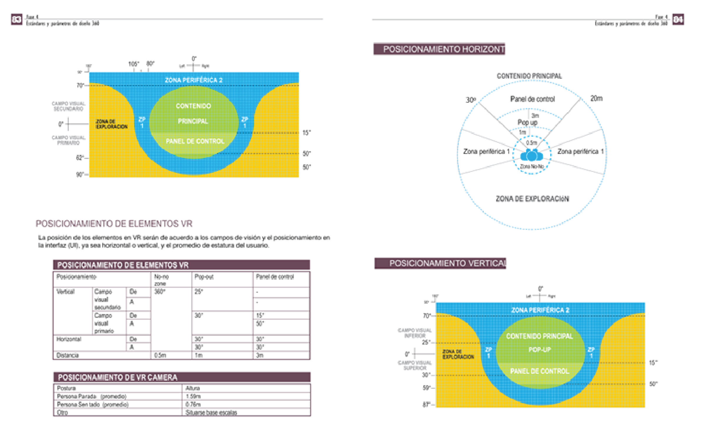
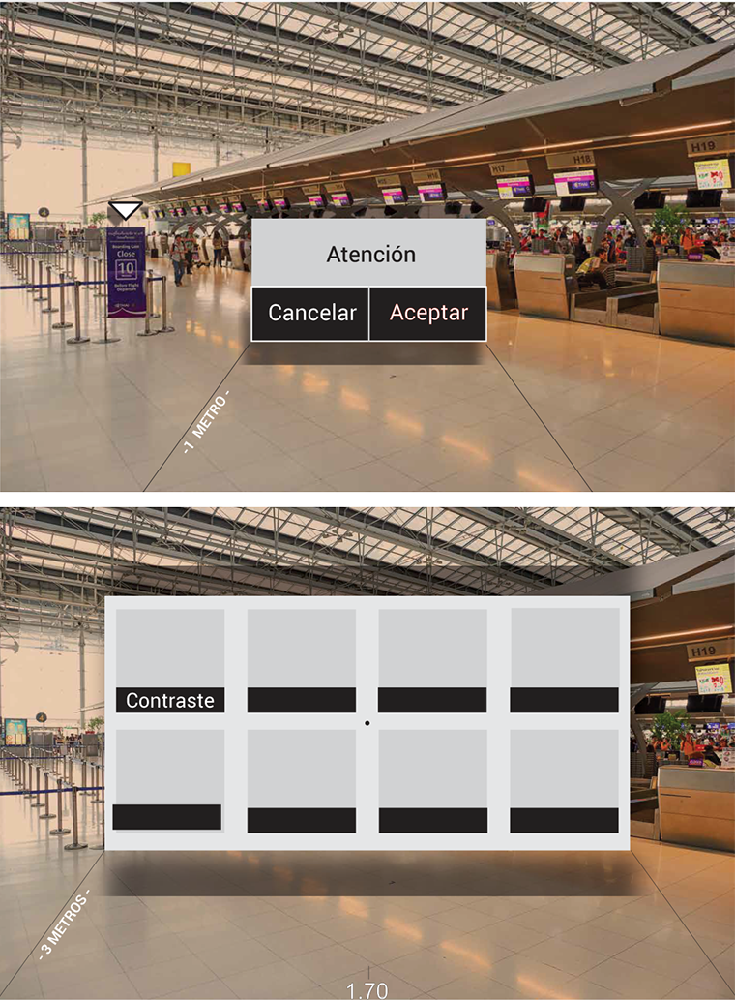
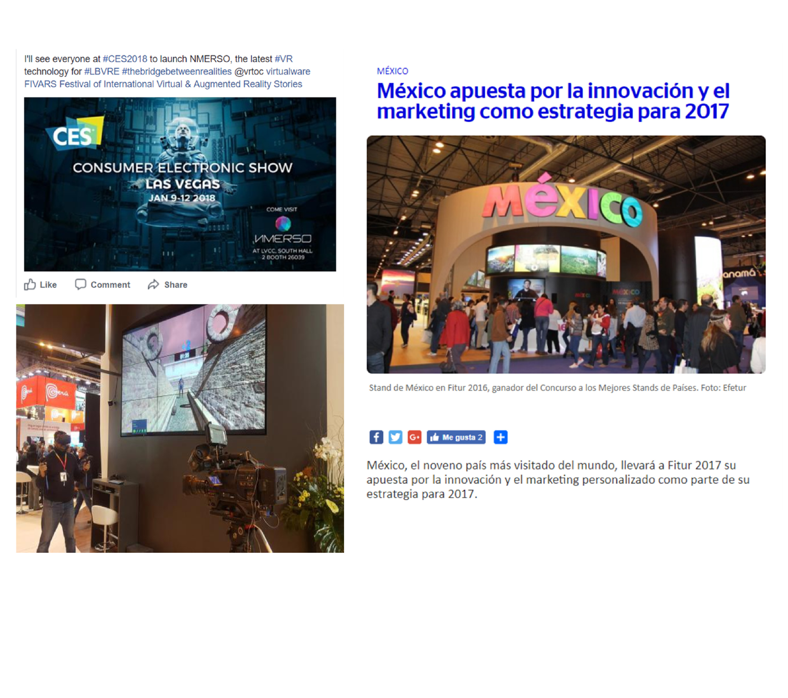
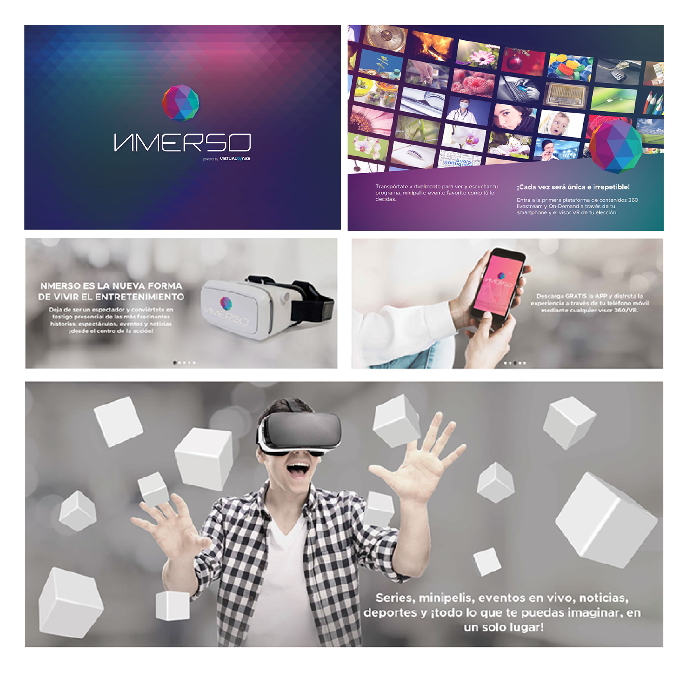

Raúl Pérez
Senior Product & Interaction Designer

"How can a digital device that seeks to replicate reality be more comfortable?"

Establishing standards that allow people to use and take advantage of this new technology in the most comfortable and seamless possible way.
Virtualware is an international company specialized in projects involving software, hardware and Virtual Reality services. This project began as an exploration of the technological, physical and cultural environment of VR to detect needs, since the company had found an opportunity in the businesses involving this technology; however, the company had no design standards to resolve these projects; thus, we sought to lay the groundwork to improve the overall quality of all upcoming projects.
This project emerged under the context of a team that had been developing virtual reality projects without design requirements to meet technological needs from a people-centered perception.
How can we create a more enjoyable experience with a screen directly in front of our eyes?
What are the ideal design parameters for generating VR content?
How would people from different cultural backgrounds react to the content that has been created?
What is the value that can be created for them with such technology?
How can a new technology be linked to the users’ context?
Inspiration phase
At the beginning of this project, we made an immersion in the context of people at different levels:
Social. To understand issues related to the demand for products and services in different contexts.
Cultural. With the purpose of knowing people's consumption preferences and the value of the purchased items and services in their everyday lives.
Technological. To learn about the level of technological immersion in various technologies, since, at that time, VR was an emerging technology.
Market. To be able to know the competition and the products related to VR from the perspective of people's consumption.
All of the above to detect opportunities and strengths regarding the company's VR projects.
The other starting point that we considered was an immersion in the parameters that companies such as Google and Samsung had established until then.

We used different tools, such as interviews, benchmarking and usability tests.
Currently, the hardware required for VR has several limitations, such as battery life, and mobile devices’ specifications, which make them heat up and affect their performance.
People's consumption decisions tend to be based on the image they want to build around their identity, which is a determining factor in the type of content they share in social networks.
Having a screen in front of the eyes is often tiring for users, a problem that reduces the time viewers can use VR sets.
The use of applications tends to be based on the activities that people do, especially hobbies and work.
VR platforms require specific elements adapted to the people’s physiological needs.
The number of users interested in learning about new technologies is very large; people that are the least interested are those who hardly use digital technology and older people, with a greater sense of conventionalism.
Young people are more interested in traveling to real-life places such as Japan and Germany, rather than being able to "live" an experience in a fantasy world, such as the world of Harry Potter, Star Wars, etc.
One of people's hobbies is watching movies or series, not just on weekends, but also making time for them during weekdays.
The use of an immersive application with a VR set is not clear for many users; thus, it is necessary to optimize processes such as cardboard assembly, video selection and instructions.

Documentation for a "Best Practices" manual - "How to design a better VR experience?"

Implementation Phase
Based on the research, we designed diagrams for virtual reality interfaces, with the recommended parameters in terms of distance, contrast, colors, fonts and element positioning in the environment.

These findings came from the conclusions of the analysis of Samsung’s and Google’s parameters, from the conclusions we reached in the immersion in the context of people, usability tests and other approaches to VR experience and interaction.
The purpose was to communicate all this information to the GUI design team, concept artists and 3D modeling for the ideation sessions regarding the scenarios they would be designing.
These mockups reflected the requirements to achieve a longer time of usability of the VR headset, for example:
Menus 3 meters away
Airport scenery
Font that can be read at the lowest possible resolution (Open Sans)
Setting a greater contrast between colors in areas that require a focus of attention. Sound feedback. Biaural recording, where possible.
Interactivity at 180 degrees for seating experiences, 360 for standing and moving.
Defining standard heights based on the target audience each project.
Reducing glare during transitions.

In the end, the standards were applied to various videogames and educational experiences, highlighting those designed for promotion in fairs of the Mexican "Secretaría de Turismo" in Europe, such as:
The famous pre-Hispanic ball game. The purpose was to score points with the HTC Vive controls placed on the participants' hips. The control also contained banners with the points scored by each participant and the time remaining.
An experience on rails. The physical stage simulated the basket of a hot-air balloon; thus, when users put on the headset, they would land on a field with thousands of monarch butterflies.

A major part of the project was the collaboration in the design of a streaming platform for virtual reality content. Its purpose was to obtain better information on the acceptance of a wider audience (beyond gamers) of these types of services.
It was presented with the restrictions that a real service would have, such as stories of no more than 3 minutes and reddish scenes to reduce the damage caused to the eyes by frequent blue light.
The team contributed with the understanding of potential users, especially their context, tastes and needs to generate strategies leading to the success of future projects aimed at the same audience.

This project was just a concept developed with an understanding of the VR context.
Role: Senior Product Designer · Core team
Role: Product Designer
Role: Senior Product Designer · Core team
Role: Product Designer